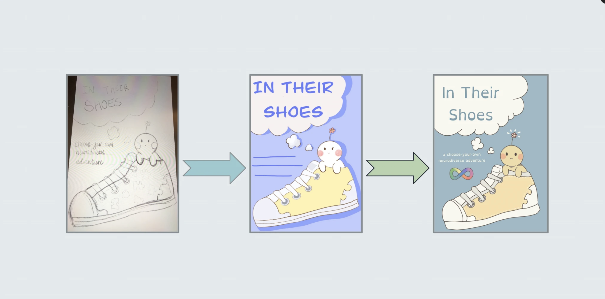

In Their Shoes
By Tanvi Vidyala, Gavin Griffin, Kevin Rha, Rui (Rose) Kong, Cate Marshburn, Taj Jawanda, and Rayna Vora
↗ Read the Book
Background
High school students often lack engaging and accurate resources about neurodiverse conditions. Existing materials are either overly clinical or stereotype-driven, leaving neurodiverse teens underrepresented and neurotypical peers uninformed.
Research
Through user interviews and guest speakers at SNP-REACH, we recorded personal stories from neurodiverse individuals who are proud of their identities and willing to share educational gaps they recognized. Key takeaways:
- Representation must be authentic, not tokenistic.
- Interactivity would better engage teens with diverse attention spans.
- Accessibility features are critical for inclusive product design.
Ideation
After brainstorming several interactive storytelling formats, we settled on creating an adventure game where the user could play as a neurodivergent student navigating their life. To better align with our two-week timeline, we pivoted to a more analog format with the same underlying principle: a choose-your-own-adventure style book.
We thought this could be a fun way to maximize engagement for both neurodiverse and neurotypical readers. To make the book as universal as possible, we chose a gender-neutral, cartoony protagonist to let all readers step into "their shoes" without bias.
Prototyping & Design
| Stage | Key Actions |
|---|---|
| Plot Tree | Completed by Day 3 to map all narrative branches and decision points. |
| Writing Iterations | Reduced diagnoses from four to two (Autism + ADHD) for clarity and depth; added info-cards for learning moments. |
| Illustrations | Iterated from animal concepts to blob sketches to the final cartoony aesthetic shown on the cover. |
| Accessibility | Applied dyslexic-friendly fonts, clear footnotes, and concise copy throughout. |
Testing & Feedback
On Day 8 of the camp, we distributed a Google Form survey to camp peers and a neurodiversity interest group to gather feedback on our draft.
Readers valued the interactive format and authentic voice, but suggested simplifying branching and clarifying definitions of neurodiverse vocabulary. We implemented this feedback before final formatting.
Outcome: Improved narrative flow and added footnotes defining terms to enhance educational value.
Final Product
Our final product was a polished interactive book independently published on Amazon, featuring inclusive visuals and branching narratives that immerse readers in neurodiverse experiences. To ensure accessibility, the team incorporated a dyslexia-friendly font, explanatory footnotes, and inclusive character designs.
A read-aloud audiobook was also created and posted on YouTube to further enhance accessibility and engagement.
Impact
- Napa City School District (California) — requested copies for middle schools.
- Montgomery County Public Schools (Maryland) — requested copies for middle schools.
- Houston ISD (Texas, the nation's tenth largest district) — invited us to supply 37 high school campuses.
We also presented at the 2022 Stanford Neurodiversity Conference, a national event for educators and advocates, expanding visibility and demonstrating potential to influence neurodiversity education nationwide.
Key Takeaways
Authentic representation requires co-creation with the communities being represented. Our team found that interactive storytelling can transform abstract awareness into genuine empathy and advocacy. This experience demonstrated how applying design thinking under a tight timeline can produce an impactful, user-centered educational tool.